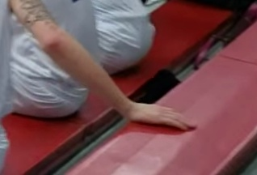
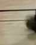

篮球候选复核
状态：awaiting_edit_prompt · 修订 10。球衣颜色和 OCR 只是线索；逐段核验号码、稳定服饰及回合归属。
确认选片后停在 awaiting_edit_prompt；收到下一条剪辑指令才生成版本。
{
"players": [
{
"id": "purple2",
"description": "紫色球衣和短裤，白色短袖内搭，双膝外露，白袜、白灰鞋。本视频中可见号码 2。",
"reference": "samples/s001.jpg"
},
{
"id": "purple13",
"description": "紫色球衣，黑色单侧长护袖，黑色球鞋。本视频中可见号码 13。",
"reference": "frames/c0002_f002.jpg"
},
{
"id": "white21",
"description": "白色球衣，黑色袜子、深色鞋。本视频中可见号码 21。",
"reference": "frames/c0003_f000.jpg"
}
],
"selection": {
"player_id": "purple2",
"high_confidence": [
"c0001",
"c0003"
],
"uncertain": [
"c0002",
"c0004"
],
"other": [],
"selected_by": "本聊天用户明确选择：这次我就选紫色2号吧"
},
"confirmation": {
"project_revision": 9,
"player_id": "purple2",
"reviewer_kind": "user",
"reviewer": "本聊天用户",
"authorization_reference": "本聊天用户实际回复：确认参考球员；保留 c0001、c0003，删除 c0002、c0004",
"decisions": {
"c0001": "keep",
"c0002": "reject",
"c0003": "keep",
"c0004": "reject"
},
"at": "2026-10-28T04:18:29.460999+00:00",
"kept": [
"c0001",
"c0003"
],
"decision_sha256": "91fae33366a23cc1bece17c40732002a93b860411747f5763557d23a3442de39"
}
}c0001 · 0.00–4.63s
BHE ball/rim crossing candidate
Local feature proposals (166)
c0001_f000_o00 / blue / OCR []c0001_f000_o01 / black / OCR []c0001_f000_o02 / black / OCR []c0001_f000_o03 / blue / OCR []c0001_f000_o04 / blue / OCR []c0001_f000_o05 / blue / OCR []c0001_f000_o06 / blue / OCR []c0001_f000_o07 / blue / OCR []c0001_f000_o08 / blue / OCR []c0001_f000_o09 / blue / OCR []c0001_f000_o10 / blue / OCR []c0001_f000_o11 / blue / OCR []c0001_f000_o12 / white / OCR []c0001_f000_o13 / white / OCR []c0001_f000_o14 / white / OCR []c0001_f000_o15 / white / OCR []c0001_f000_o16 / white / OCR []c0001_f000_o17 / blue / OCR []c0001_f000_o18 / white / OCR []c0001_f000_o19 / blue / OCR []c0001_f000_o20 / white / OCR []c0001_f000_o21 / white / OCR []c0001_f000_o22 / white / OCR []c0001_f000_o23 / white / OCR []c0001_f000_o24 / white / OCR []c0001_f000_o25 / red / OCR []c0001_f000_o26 / red / OCR []c0001_f000_o27 / red / OCR []c0001_f000_o28 / red / OCR []c0001_f000_o29 / red / OCR []c0001_f000_o30 / red / OCR []c0001_f000_o31 / red / OCR []c0001_f000_o32 / red / OCR []c0001_f000_o33 / black / OCR []c0001_f000_o34 / red / OCR []
c0001_f000_o35 / red / OCR []c0001_f000_o36 / red / OCR []c0001_f000_o37 / orange / OCR []c0001_f001_o00 / black / OCR []c0001_f001_o01 / blue / OCR []c0001_f001_o02 / blue / OCR []c0001_f001_o03 / blue / OCR []c0001_f001_o04 / black / OCR []c0001_f001_o05 / black / OCR []c0001_f001_o06 / blue / OCR []c0001_f001_o07 / blue / OCR [{'text': '84', 'confidence': 44.164413, 'verified': False}]c0001_f001_o08 / blue / OCR []c0001_f001_o09 / blue / OCR []c0001_f001_o10 / blue / OCR []c0001_f001_o11 / blue / OCR []c0001_f001_o12 / blue / OCR []c0001_f001_o13 / gray / OCR []c0001_f001_o14 / white / OCR []c0001_f001_o15 / white / OCR []c0001_f001_o16 / blue / OCR []c0001_f001_o17 / white / OCR []c0001_f001_o18 / white / OCR [{'text': '4', 'confidence': 43.226032, 'verified': False}]c0001_f001_o19 / white / OCR []c0001_f001_o20 / white / OCR []c0001_f001_o21 / white / OCR []c0001_f001_o22 / orange / OCR []c0001_f001_o23 / white / OCR []c0001_f001_o24 / white / OCR []c0001_f001_o25 / white / OCR []c0001_f001_o26 / red / OCR []c0001_f001_o27 / red / OCR []c0001_f001_o28 / red / OCR []c0001_f001_o29 / red / OCR []c0001_f001_o30 / red / OCR []c0001_f001_o31 / red / OCR []c0001_f001_o32 / black / OCR []c0001_f001_o33 / orange / OCR []c0001_f001_o34 / red / OCR []c0001_f001_o35 / red / OCR []c0001_f001_o36 / orange / OCR []c0001_f001_o37 / red / OCR []c0001_f002_o00 / blue / OCR []c0001_f002_o01 / blue / OCR []c0001_f002_o02 / blue / OCR []c0001_f002_o03 / gray / OCR []c0001_f002_o04 / black / OCR []c0001_f002_o05 / gray / OCR []c0001_f002_o06 / black / OCR []c0001_f002_o07 / black / OCR []c0001_f002_o08 / blue / OCR []c0001_f002_o09 / blue / OCR []c0001_f002_o10 / blue / OCR []c0001_f002_o11 / blue / OCR []c0001_f002_o12 / black / OCR []c0001_f002_o13 / blue / OCR []c0001_f002_o14 / black / OCR []c0001_f002_o15 / black / OCR []c0001_f002_o16 / black / OCR []c0001_f002_o17 / gray / OCR []c0001_f002_o18 / white / OCR []c0001_f002_o19 / blue / OCR []c0001_f002_o20 / white / OCR []c0001_f002_o21 / white / OCR []c0001_f002_o22 / white / OCR []c0001_f002_o23 / white / OCR [{'text': '4', 'confidence': 41.299866, 'verified': False}]c0001_f002_o24 / white / OCR []c0001_f002_o25 / white / OCR []c0001_f002_o26 / white / OCR []c0001_f002_o27 / white / OCR []c0001_f002_o28 / white / OCR []c0001_f002_o29 / white / OCR []c0001_f002_o30 / white / OCR []c0001_f002_o31 / white / OCR []c0001_f002_o32 / orange / OCR []c0001_f002_o33 / white / OCR []c0001_f002_o34 / white / OCR []c0001_f002_o35 / white / OCR []c0001_f002_o36 / red / OCR []c0001_f002_o37 / black / OCR []c0001_f002_o38 / red / OCR []c0001_f002_o39 / red / OCR []c0001_f002_o40 / red / OCR []c0001_f002_o41 / red / OCR []c0001_f002_o42 / red / OCR []c0001_f002_o43 / orange / OCR []c0001_f002_o44 / black / OCR []c0001_f002_o45 / black / OCR []c0001_f002_o46 / red / OCR []c0001_f002_o47 / red / OCR []c0001_f002_o48 / orange / OCR []c0001_f003_o00 / black / OCR []c0001_f003_o01 / blue / OCR []c0001_f003_o02 / black / OCR []c0001_f003_o03 / black / OCR []c0001_f003_o04 / blue / OCR []c0001_f003_o05 / black / OCR []c0001_f003_o06 / black / OCR []c0001_f003_o07 / blue / OCR []c0001_f003_o08 / blue / OCR []c0001_f003_o09 / black / OCR []c0001_f003_o10 / blue / OCR []c0001_f003_o11 / blue / OCR []c0001_f003_o12 / blue / OCR []c0001_f003_o13 / blue / OCR []c0001_f003_o14 / blue / OCR []c0001_f003_o15 / blue / OCR []c0001_f003_o16 / black / OCR []c0001_f003_o17 / gray / OCR []c0001_f003_o18 / white / OCR []c0001_f003_o19 / white / OCR []c0001_f003_o20 / white / OCR []c0001_f003_o21 / white / OCR []c0001_f003_o22 / white / OCR []c0001_f003_o23 / white / OCR []c0001_f003_o24 / white / OCR []c0001_f003_o25 / white / OCR []c0001_f003_o26 / white / OCR []c0001_f003_o27 / white / OCR []c0001_f003_o28 / white / OCR []c0001_f003_o29 / white / OCR []c0001_f003_o30 / orange / OCR []c0001_f003_o31 / red / OCR []c0001_f003_o32 / red / OCR []c0001_f003_o33 / red / OCR []c0001_f003_o34 / red / OCR []c0001_f003_o35 / red / OCR []c0001_f003_o36 / red / OCR []c0001_f003_o37 / red / OCR []c0001_f003_o38 / gray / OCR []c0001_f003_o39 / orange / OCR []c0001_f003_o40 / red / OCR [] {
"candidate_id": "c0001",
"player_id": "purple2",
"certainty": "high",
"reason": "1.736 秒可见紫色背号 2、白色短袖内搭和白鞋。这里只确认球员在场，不确认 BHE 2.63 秒是进球。",
"role": "visible",
"evidence": [
{
"kind": "number_visible",
"time": 1.7363,
"detail": "左侧紫色背号 2，白色短袖内搭，裸露双膝；原始帧 frames/c0001_f001.jpg。"
}
],
"labels": [
"球员在场",
"回防",
"进球未核实"
],
"reviewer": {
"kind": "agent_visual_review",
"name": "Codex visual review of original frames; not automatic identity recognition"
},
"at": "2026-10-28T04:13:38.629179+00:00"
}c0002 · 1.57–6.57s
BHE ball/rim crossing candidate
Local feature proposals (168)
c0002_f000_o00 / black / OCR []c0002_f000_o01 / blue / OCR []c0002_f000_o02 / blue / OCR []c0002_f000_o03 / blue / OCR []c0002_f000_o04 / black / OCR []c0002_f000_o05 / black / OCR []c0002_f000_o06 / black / OCR []c0002_f000_o07 / blue / OCR []c0002_f000_o08 / black / OCR []c0002_f000_o09 / blue / OCR []c0002_f000_o10 / black / OCR []c0002_f000_o11 / blue / OCR []c0002_f000_o12 / black / OCR []c0002_f000_o13 / white / OCR []c0002_f000_o14 / white / OCR []c0002_f000_o15 / white / OCR []c0002_f000_o16 / white / OCR []c0002_f000_o17 / white / OCR []c0002_f000_o18 / white / OCR []c0002_f000_o19 / white / OCR []c0002_f000_o20 / white / OCR []c0002_f000_o21 / white / OCR []c0002_f000_o22 / white / OCR []c0002_f000_o23 / white / OCR []c0002_f000_o24 / white / OCR []c0002_f000_o25 / white / OCR []c0002_f000_o26 / white / OCR []c0002_f000_o27 / white / OCR []c0002_f000_o28 / red / OCR []c0002_f000_o29 / red / OCR []c0002_f000_o30 / red / OCR []c0002_f000_o31 / red / OCR []c0002_f000_o32 / red / OCR []c0002_f000_o33 / red / OCR []c0002_f000_o34 / red / OCR []c0002_f000_o35 / red / OCR []c0002_f000_o36 / orange / OCR []c0002_f000_o37 / black / OCR []c0002_f000_o38 / orange / OCR []c0002_f000_o39 / black / OCR []c0002_f000_o40 / red / OCR []c0002_f000_o41 / red / OCR []c0002_f000_o42 / orange / OCR []c0002_f001_o00 / blue / OCR []c0002_f001_o01 / blue / OCR []c0002_f001_o02 / black / OCR []c0002_f001_o03 / blue / OCR []c0002_f001_o04 / black / OCR []c0002_f001_o05 / black / OCR []c0002_f001_o06 / black / OCR []c0002_f001_o07 / blue / OCR []c0002_f001_o08 / blue / OCR []c0002_f001_o09 / black / OCR []c0002_f001_o10 / black / OCR []c0002_f001_o11 / blue / OCR []c0002_f001_o12 / black / OCR []c0002_f001_o13 / black / OCR []c0002_f001_o14 / black / OCR []c0002_f001_o15 / black / OCR []c0002_f001_o16 / black / OCR []c0002_f001_o17 / gray / OCR []c0002_f001_o18 / white / OCR [{'text': '7', 'confidence': 49.579811, 'verified': False}]c0002_f001_o19 / white / OCR []c0002_f001_o20 / white / OCR []c0002_f001_o21 / white / OCR []c0002_f001_o22 / white / OCR []c0002_f001_o23 / white / OCR []c0002_f001_o24 / white / OCR []c0002_f001_o25 / white / OCR []c0002_f001_o26 / white / OCR []c0002_f001_o27 / white / OCR []c0002_f001_o28 / white / OCR []c0002_f001_o29 / white / OCR []c0002_f001_o30 / white / OCR []c0002_f001_o31 / red / OCR []c0002_f001_o32 / red / OCR []c0002_f001_o33 / gray / OCR []c0002_f001_o34 / red / OCR []c0002_f001_o35 / red / OCR []c0002_f001_o36 / gray / OCR []c0002_f001_o37 / red / OCR []c0002_f001_o38 / red / OCR []c0002_f001_o39 / black / OCR []c0002_f001_o40 / black / OCR []c0002_f001_o41 / red / OCR []c0002_f001_o42 / orange / OCR []c0002_f001_o43 / red / OCR []c0002_f002_o00 / blue / OCR []c0002_f002_o01 / black / OCR []c0002_f002_o02 / blue / OCR []c0002_f002_o03 / black / OCR []c0002_f002_o04 / black / OCR []c0002_f002_o05 / blue / OCR []c0002_f002_o06 / black / OCR []c0002_f002_o07 / black / OCR []c0002_f002_o08 / black / OCR []c0002_f002_o09 / blue / OCR []c0002_f002_o10 / blue / OCR []c0002_f002_o11 / blue / OCR []c0002_f002_o12 / black / OCR [{'text': '2', 'confidence': 72.032089, 'verified': False}]c0002_f002_o13 / blue / OCR []c0002_f002_o14 / black / OCR []c0002_f002_o15 / black / OCR []c0002_f002_o16 / blue / OCR []c0002_f002_o17 / blue / OCR []c0002_f002_o18 / blue / OCR []c0002_f002_o19 / black / OCR []c0002_f002_o20 / white / OCR []c0002_f002_o21 / white / OCR []c0002_f002_o22 / white / OCR []c0002_f002_o23 / blue / OCR []c0002_f002_o24 / white / OCR []c0002_f002_o25 / white / OCR []c0002_f002_o26 / white / OCR []c0002_f002_o27 / white / OCR []c0002_f002_o28 / white / OCR []c0002_f002_o29 / white / OCR []c0002_f002_o30 / white / OCR [{'text': '5', 'confidence': 63.85392, 'verified': False}, {'text': '4', 'confidence': 38.364594, 'verified': False}]c0002_f002_o31 / black / OCR []c0002_f002_o32 / orange / OCR []c0002_f002_o33 / white / OCR []c0002_f002_o34 / red / OCR []c0002_f002_o35 / red / OCR []c0002_f002_o36 / red / OCR [{'text': '7', 'confidence': 63.37558, 'verified': False}]c0002_f002_o37 / black / OCR []c0002_f002_o38 / gray / OCR []c0002_f002_o39 / gray / OCR []c0002_f003_o00 / blue / OCR []c0002_f003_o01 / black / OCR []c0002_f003_o02 / black / OCR []c0002_f003_o03 / black / OCR []c0002_f003_o04 / black / OCR []c0002_f003_o05 / blue / OCR []c0002_f003_o06 / black / OCR []c0002_f003_o07 / black / OCR []c0002_f003_o08 / blue / OCR []c0002_f003_o09 / blue / OCR []c0002_f003_o10 / black / OCR []c0002_f003_o11 / blue / OCR []c0002_f003_o12 / blue / OCR []c0002_f003_o13 / blue / OCR []c0002_f003_o14 / black / OCR []c0002_f003_o15 / black / OCR []c0002_f003_o16 / blue / OCR []c0002_f003_o17 / black / OCR []c0002_f003_o18 / black / OCR []c0002_f003_o19 / black / OCR []c0002_f003_o20 / blue / OCR []c0002_f003_o21 / white / OCR []c0002_f003_o22 / white / OCR []c0002_f003_o23 / white / OCR []c0002_f003_o24 / white / OCR []c0002_f003_o25 / white / OCR []c0002_f003_o26 / white / OCR []c0002_f003_o27 / white / OCR []c0002_f003_o28 / white / OCR []c0002_f003_o29 / white / OCR []c0002_f003_o30 / white / OCR []c0002_f003_o31 / orange / OCR []c0002_f003_o32 / gray / OCR []c0002_f003_o33 / red / OCR []c0002_f003_o34 / gray / OCR []c0002_f003_o35 / white / OCR []c0002_f003_o36 / white / OCR []c0002_f003_o37 / orange / OCR []c0002_f003_o38 / red / OCR []c0002_f003_o39 / orange / OCR []c0002_f003_o40 / red / OCR []
{
"candidate_id": "c0002",
"player_id": "purple2",
"certainty": "uncertain",
"needs_review": true,
"reason": "与 c0001 重叠，早段人物较远、横移模糊；自动 OCR 的 2 可能缺失前一位数字，不足以独立认人。人工决定是否保留或合并。",
"role": "uncertain",
"evidence": [],
"labels": [
"疑似重复",
"横移"
],
"reviewer": {
"kind": "agent_visual_review",
"name": "Codex visual review of original frames; not automatic identity recognition"
},
"at": "2026-10-28T04:13:38.629320+00:00"
}c0003 · 8.57–13.57s
BHE ball/rim crossing candidate
Local feature proposals (160)
c0003_f000_o00 / blue / OCR []c0003_f000_o01 / gray / OCR []c0003_f000_o02 / black / OCR []c0003_f000_o03 / blue / OCR []c0003_f000_o04 / blue / OCR []c0003_f000_o05 / black / OCR []c0003_f000_o06 / blue / OCR []c0003_f000_o07 / blue / OCR []c0003_f000_o08 / blue / OCR []c0003_f000_o09 / black / OCR []c0003_f000_o10 / blue / OCR []c0003_f000_o11 / black / OCR []c0003_f000_o12 / blue / OCR []c0003_f000_o13 / black / OCR []c0003_f000_o14 / white / OCR []c0003_f000_o15 / blue / OCR []c0003_f000_o16 / black / OCR []c0003_f000_o17 / white / OCR []c0003_f000_o18 / white / OCR []c0003_f000_o19 / white / OCR []c0003_f000_o20 / white / OCR []c0003_f000_o21 / white / OCR []c0003_f000_o22 / white / OCR [{'text': '7', 'confidence': 54.493507, 'verified': False}]c0003_f000_o23 / white / OCR []c0003_f000_o24 / white / OCR []c0003_f000_o25 / red / OCR []c0003_f000_o26 / red / OCR []c0003_f000_o27 / red / OCR [{'text': '4', 'confidence': 68.026611, 'verified': False}]c0003_f000_o28 / black / OCR []c0003_f000_o29 / red / OCR []c0003_f000_o30 / red / OCR []c0003_f000_o31 / red / OCR []c0003_f000_o32 / orange / OCR []c0003_f000_o33 / black / OCR []c0003_f000_o34 / red / OCR []c0003_f000_o35 / red / OCR []c0003_f000_o36 / red / OCR []c0003_f000_o37 / orange / OCR []c0003_f000_o38 / white / OCR []c0003_f000_o39 / white / OCR []c0003_f000_o40 / white / OCR []c0003_f001_o00 / blue / OCR []c0003_f001_o01 / gray / OCR []c0003_f001_o02 / blue / OCR []c0003_f001_o03 / blue / OCR []c0003_f001_o04 / black / OCR []c0003_f001_o05 / black / OCR []c0003_f001_o06 / blue / OCR []c0003_f001_o07 / blue / OCR []c0003_f001_o08 / blue / OCR []c0003_f001_o09 / blue / OCR []c0003_f001_o10 / blue / OCR []c0003_f001_o11 / black / OCR []c0003_f001_o12 / blue / OCR []c0003_f001_o13 / blue / OCR []c0003_f001_o14 / blue / OCR []c0003_f001_o15 / blue / OCR []c0003_f001_o16 / black / OCR []c0003_f001_o17 / white / OCR []c0003_f001_o18 / gray / OCR []c0003_f001_o19 / white / OCR []c0003_f001_o20 / white / OCR []c0003_f001_o21 / white / OCR []c0003_f001_o22 / white / OCR []c0003_f001_o23 / gray / OCR []c0003_f001_o24 / gray / OCR []c0003_f001_o25 / black / OCR []c0003_f001_o26 / red / OCR []c0003_f001_o27 / red / OCR []c0003_f001_o28 / white / OCR []c0003_f001_o29 / red / OCR []c0003_f001_o30 / red / OCR []c0003_f001_o31 / red / OCR []c0003_f001_o32 / red / OCR []c0003_f001_o33 / orange / OCR []c0003_f001_o34 / orange / OCR []c0003_f001_o35 / orange / OCR []c0003_f001_o36 / orange / OCR []c0003_f001_o37 / orange / OCR []c0003_f001_o38 / orange / OCR []c0003_f001_o39 / red / OCR []c0003_f001_o40 / white / OCR []c0003_f002_o00 / blue / OCR []c0003_f002_o01 / blue / OCR []c0003_f002_o02 / blue / OCR []c0003_f002_o03 / blue / OCR []c0003_f002_o04 / black / OCR []c0003_f002_o05 / blue / OCR []c0003_f002_o06 / black / OCR []c0003_f002_o07 / blue / OCR []c0003_f002_o08 / blue / OCR []c0003_f002_o09 / blue / OCR []c0003_f002_o10 / black / OCR []c0003_f002_o11 / blue / OCR []c0003_f002_o12 / black / OCR []c0003_f002_o13 / blue / OCR []c0003_f002_o14 / blue / OCR []c0003_f002_o15 / white / OCR []c0003_f002_o16 / white / OCR []c0003_f002_o17 / white / OCR []c0003_f002_o18 / white / OCR []c0003_f002_o19 / white / OCR []c0003_f002_o20 / white / OCR []c0003_f002_o21 / white / OCR []c0003_f002_o22 / white / OCR []c0003_f002_o23 / white / OCR []c0003_f002_o24 / white / OCR []c0003_f002_o25 / white / OCR []c0003_f002_o26 / gray / OCR []c0003_f002_o27 / red / OCR []c0003_f002_o28 / red / OCR []c0003_f002_o29 / red / OCR []c0003_f002_o30 / gray / OCR []c0003_f002_o31 / white / OCR []c0003_f002_o32 / white / OCR []c0003_f002_o33 / white / OCR []c0003_f002_o34 / red / OCR []c0003_f002_o35 / red / OCR []c0003_f002_o36 / orange / OCR []c0003_f002_o37 / red / OCR []c0003_f002_o38 / orange / OCR []c0003_f002_o39 / white / OCR []c0003_f002_o40 / red / OCR []c0003_f003_o00 / blue / OCR []c0003_f003_o01 / blue / OCR []c0003_f003_o02 / blue / OCR []c0003_f003_o03 / black / OCR []c0003_f003_o04 / blue / OCR []c0003_f003_o05 / blue / OCR []c0003_f003_o06 / blue / OCR []c0003_f003_o07 / blue / OCR []c0003_f003_o08 / black / OCR []c0003_f003_o09 / blue / OCR []c0003_f003_o10 / blue / OCR []c0003_f003_o11 / black / OCR []c0003_f003_o12 / black / OCR [{'text': '1', 'confidence': 43.001102, 'verified': False}]c0003_f003_o13 / blue / OCR []c0003_f003_o14 / black / OCR []c0003_f003_o15 / black / OCR []c0003_f003_o16 / white / OCR []c0003_f003_o17 / white / OCR []c0003_f003_o18 / gray / OCR []c0003_f003_o19 / white / OCR []c0003_f003_o20 / white / OCR []c0003_f003_o21 / white / OCR []c0003_f003_o22 / white / OCR []c0003_f003_o23 / gray / OCR []c0003_f003_o24 / red / OCR []c0003_f003_o25 / red / OCR []c0003_f003_o26 / red / OCR []c0003_f003_o27 / red / OCR []c0003_f003_o28 / red / OCR []c0003_f003_o29 / red / OCR [{'text': '4', 'confidence': 43.785931, 'verified': False}]c0003_f003_o30 / red / OCR []c0003_f003_o31 / gray / OCR []c0003_f003_o32 / red / OCR []c0003_f003_o33 / orange / OCR []c0003_f003_o34 / white / OCR []c0003_f003_o35 / orange / OCR []c0003_f003_o36 / orange / OCR []
{
"candidate_id": "c0003",
"player_id": "purple2",
"certainty": "high",
"reason": "与 9.5 秒参考样本服饰一致，10.445 秒背号 2 可见。紫衣球员主要处于无球防守位置，白衣球员完成进攻，不能标成紫衣 2 号进球。",
"role": "off_ball_defense",
"evidence": [
{
"kind": "number_visible",
"time": 10.445,
"detail": "右侧紫色背号 2，白色短袖内搭、白袜与白灰鞋，frames/c0003_f001.jpg。"
},
{
"kind": "confirmed_sample_match",
"sample_id": "s001",
"time": 9.5,
"detail": "与 s001 中的白色短袖、裸露双膝、白灰鞋一致；样本框为测试定位，尚未冒称用户确认。"
}
],
"labels": [
"球员在场",
"无球防守",
"他人投篮"
],
"reviewer": {
"kind": "agent_visual_review",
"name": "Codex visual review of original frames; not automatic identity recognition"
},
"at": "2026-10-28T04:13:38.629329+00:00"
}c0004 · 9.43–14.43s
BHE ball/rim crossing candidate
Local feature proposals (145)
c0004_f000_o00 / blue / OCR []c0004_f000_o01 / blue / OCR []c0004_f000_o02 / blue / OCR []c0004_f000_o03 / blue / OCR []c0004_f000_o04 / blue / OCR []c0004_f000_o05 / black / OCR []c0004_f000_o06 / blue / OCR [{'text': '4', 'confidence': 68.177605, 'verified': False}]c0004_f000_o07 / blue / OCR []c0004_f000_o08 / blue / OCR []c0004_f000_o09 / blue / OCR []c0004_f000_o10 / blue / OCR []c0004_f000_o11 / blue / OCR []c0004_f000_o12 / black / OCR []c0004_f000_o13 / black / OCR []c0004_f000_o14 / blue / OCR []c0004_f000_o15 / blue / OCR []c0004_f000_o16 / black / OCR []c0004_f000_o17 / black / OCR []c0004_f000_o18 / gray / OCR []c0004_f000_o19 / white / OCR []c0004_f000_o20 / gray / OCR []c0004_f000_o21 / blue / OCR []c0004_f000_o22 / white / OCR []c0004_f000_o23 / white / OCR []c0004_f000_o24 / gray / OCR []c0004_f000_o25 / gray / OCR []c0004_f000_o26 / red / OCR []c0004_f000_o27 / red / OCR []c0004_f000_o28 / white / OCR []c0004_f000_o29 / red / OCR []c0004_f000_o30 / orange / OCR []c0004_f000_o31 / red / OCR []c0004_f000_o32 / red / OCR []c0004_f000_o33 / white / OCR []c0004_f000_o34 / orange / OCR []c0004_f000_o35 / red / OCR [{'text': '4', 'confidence': 38.486385, 'verified': False}]c0004_f000_o36 / white / OCR []c0004_f000_o37 / orange / OCR []c0004_f001_o00 / blue / OCR []c0004_f001_o01 / blue / OCR []c0004_f001_o02 / gray / OCR []c0004_f001_o03 / blue / OCR []c0004_f001_o04 / black / OCR []c0004_f001_o05 / blue / OCR []c0004_f001_o06 / blue / OCR []c0004_f001_o07 / blue / OCR []c0004_f001_o08 / blue / OCR []c0004_f001_o09 / blue / OCR []c0004_f001_o10 / black / OCR []c0004_f001_o11 / black / OCR []c0004_f001_o12 / blue / OCR []c0004_f001_o13 / black / OCR []c0004_f001_o14 / black / OCR []c0004_f001_o15 / white / OCR []c0004_f001_o16 / white / OCR []c0004_f001_o17 / white / OCR []c0004_f001_o18 / blue / OCR []c0004_f001_o19 / white / OCR []c0004_f001_o20 / white / OCR [{'text': '1', 'confidence': 43.929611, 'verified': False}]c0004_f001_o21 / white / OCR []c0004_f001_o22 / white / OCR []c0004_f001_o23 / white / OCR []c0004_f001_o24 / white / OCR []c0004_f001_o25 / white / OCR []c0004_f001_o26 / gray / OCR []c0004_f001_o27 / red / OCR []c0004_f001_o28 / red / OCR []c0004_f001_o29 / red / OCR []c0004_f001_o30 / red / OCR []c0004_f001_o31 / white / OCR []c0004_f001_o32 / white / OCR []c0004_f001_o33 / red / OCR []c0004_f001_o34 / orange / OCR []c0004_f001_o35 / orange / OCR []c0004_f001_o36 / red / OCR []c0004_f001_o37 / red / OCR []c0004_f001_o38 / white / OCR []c0004_f001_o39 / orange / OCR []c0004_f001_o40 / white / OCR []c0004_f001_o41 / orange / OCR []c0004_f002_o00 / blue / OCR []c0004_f002_o01 / blue / OCR []c0004_f002_o02 / blue / OCR []c0004_f002_o03 / black / OCR []c0004_f002_o04 / blue / OCR []c0004_f002_o05 / blue / OCR []c0004_f002_o06 / black / OCR []c0004_f002_o07 / blue / OCR []c0004_f002_o08 / black / OCR [{'text': '3', 'confidence': 46.984554, 'verified': False}]c0004_f002_o09 / black / OCR []c0004_f002_o10 / blue / OCR []c0004_f002_o11 / black / OCR []c0004_f002_o12 / white / OCR []c0004_f002_o13 / white / OCR []c0004_f002_o14 / white / OCR []c0004_f002_o15 / white / OCR []c0004_f002_o16 / white / OCR []
c0004_f002_o17 / white / OCR []c0004_f002_o18 / gray / OCR []c0004_f002_o19 / red / OCR []c0004_f002_o20 / red / OCR []c0004_f002_o21 / red / OCR []c0004_f002_o22 / red / OCR []c0004_f002_o23 / orange / OCR []c0004_f002_o24 / red / OCR []c0004_f002_o25 / red / OCR []c0004_f002_o26 / red / OCR []c0004_f002_o27 / red / OCR []c0004_f002_o28 / red / OCR []c0004_f002_o29 / orange / OCR []c0004_f002_o30 / orange / OCR []c0004_f002_o31 / red / OCR [{'text': '7', 'confidence': 72.019814, 'verified': False}]c0004_f002_o32 / orange / OCR []c0004_f002_o33 / orange / OCR []c0004_f002_o34 / white / OCR []c0004_f003_o00 / blue / OCR []c0004_f003_o01 / blue / OCR []c0004_f003_o02 / black / OCR []c0004_f003_o03 / black / OCR []c0004_f003_o04 / blue / OCR []c0004_f003_o05 / blue / OCR []c0004_f003_o06 / blue / OCR []c0004_f003_o07 / blue / OCR []c0004_f003_o08 / black / OCR []c0004_f003_o09 / blue / OCR []c0004_f003_o10 / black / OCR []c0004_f003_o11 / blue / OCR []c0004_f003_o12 / black / OCR []c0004_f003_o13 / white / OCR []c0004_f003_o14 / white / OCR []c0004_f003_o15 / blue / OCR []c0004_f003_o16 / white / OCR []c0004_f003_o17 / white / OCR []c0004_f003_o18 / white / OCR []c0004_f003_o19 / white / OCR []c0004_f003_o20 / gray / OCR []c0004_f003_o21 / red / OCR []c0004_f003_o22 / red / OCR []c0004_f003_o23 / red / OCR []c0004_f003_o24 / red / OCR []c0004_f003_o25 / white / OCR []c0004_f003_o26 / white / OCR []c0004_f003_o27 / orange / OCR []c0004_f003_o28 / black / OCR []c0004_f003_o29 / white / OCR [] {
"candidate_id": "c0004",
"player_id": "purple2",
"certainty": "high",
"needs_review": true,
"reason": "人物清楚，但与 c0003 重叠约 4.14 秒，疑似同一回合重复候选；单列供人工删选，不当作独立高光。",
"role": "off_ball_defense",
"evidence": [
{
"kind": "number_visible",
"time": 10.055,
"detail": "右侧紫色背号 2、白色短袖内搭，frames/c0004_f000.jpg。"
}
],
"labels": [
"疑似重复",
"无球防守"
],
"reviewer": {
"kind": "agent_visual_review",
"name": "Codex visual review of original frames; not automatic identity recognition"
},
"at": "2026-10-28T04:13:38.629334+00:00"
}逐段决定
填写后下载复核 JSON，交给 Codex 保存项目。此页不会合并成片或联网。